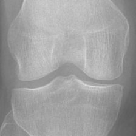

X-ray
Real MRI
; ?>)
Generated Pseudo-MRI
; ?>)
Pseudo-MRI (x2 Interpolation)
; ?>)
; ?>)
; ?>)
; ?>)
Knee osteoarthritis (KOA) is a prevalent musculoskeletal disorder, and X-rays are commonly used for its diagnosis due to their cost-effectiveness. Magnetic Resonance Imaging (MRI), on the other hand, offers detailed soft tissue visualization and has become a valuable supplementary diagnostic tool for KOA. Unfortunately, the high cost and limited accessibility of MRI hinder its widespread use, leaving many patients with KOA reliant solely on X-ray imaging. In this study, we introduce a novel diffusion-based Xray2MRI model capable of generating pseudo-MRI volumes from one single X-ray image. In addition to using X-rays as conditional input, our model integrates target depth, KOA probability distribution, and image intensity distribution modules to guide the synthesis process, ensuring that the generated corresponding slices accurately correspond to the anatomical structures. Experimental results demonstrate that by integrating information from X-rays with additional input data, our proposed approach is capable of generating pseudo-MRI sequences that approximate real MRI scans. Moreover, by increasing the inference times, the model achieves effective interpolation, further improving the continuity and smoothness of the generated MRI sequences, representing one promising initial attempt for cost-effective medical imaging solutions.
@misc{wang2024diffusionbasedxray2mrimodelgenerating,
title={A Diffusion-based Xray2MRI Model: Generating Pseudo-MRI Volumes From one Single X-ray},
author={Zhe Wang and Rachid Jennane and Aladine Chetouani and Mohamed Jarraya},
year={2024},
eprint={2410.06997},
archivePrefix={arXiv},
url={https://arxiv.org/abs/2410.06997},
}